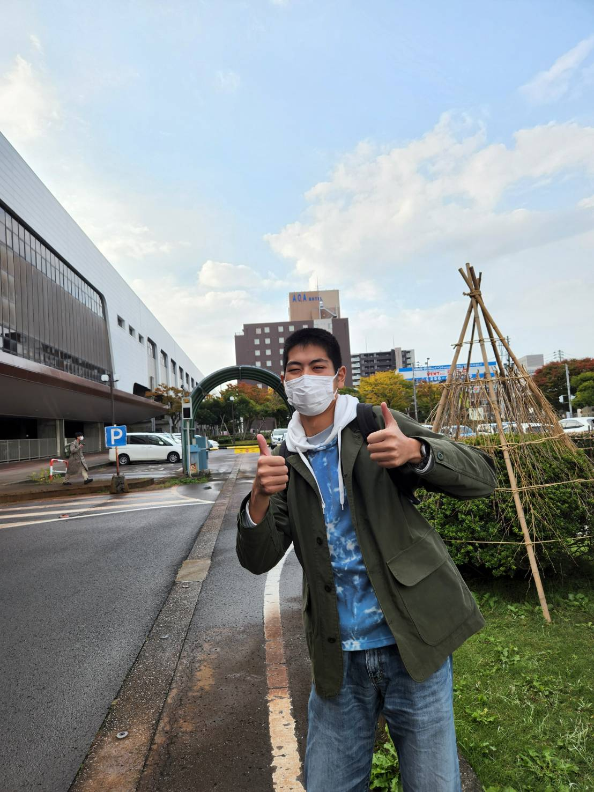
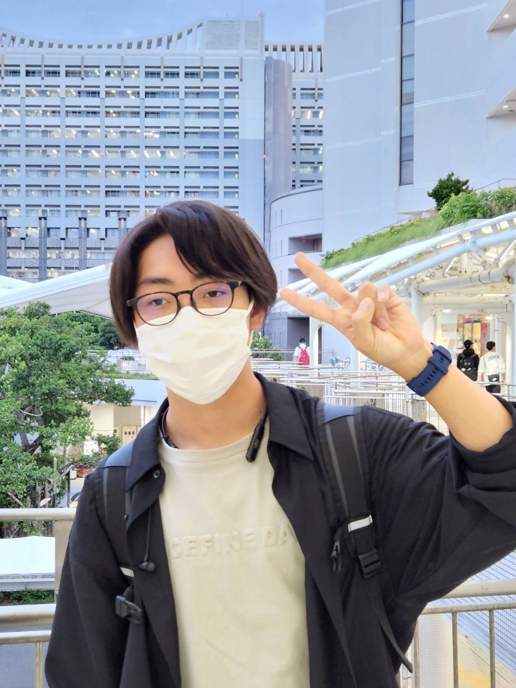

What is Junzs
Junzsとは上田染谷丘高校の探究活動の中で生まれたグループです
文化祭の待ち時間をわかるようになったらいいなぁという思いから活動を始めました
現在文化祭専用の待ち時間表示、予約サイトを作るプロジェクトが進行中です
メンバー紹介

大山君

つつみん
Member 2 description...

さのくん
Member 3 description...

いしいちゃん
Member 4 description...
現在進行中のプロジェクト

Schoolfes web app
文化祭の待ち時間の表示や予約機能などをつけることができるウェブアプリですScholfes web app を導入することで文化祭のUX改善に役立ちます！詳しくは こちらを参照してください。
最新のニュース

現在のニュースはありません
ニュースが入り次第更新します